CloudNet@에서 진행하고 있는 CI/CD Study 3주차에는 Jenkins와 ArgoCD을 다뤘습니다.
이번에는 kubernetes(이하, k8s)에 self-host Git과 Jenkins를 배포 후 CI/CD 부분을 다루도록 하겠습니다.
하다보니 개인적으로, 아래 3가지가 주로 기억에 남았던 것 같습니다.
- Docker UDS의 GID
- Gitea와 Multibranch Pipeline의 결합
- Local PV의 Taint 및 Node 지정
해당 구성들은 아래 GitHub에 탑재되어 있습니다.
https://github.com/kkumtree/ci-cd-cloudnet-study 의 3w 폴더
0. 실습 준비
(1) kind
kind 설치의 경우 다음 포스트를 참고할 수 있습니다.
리눅스에 KIND 설치하기 w/golang
Docs: https://kind.sigs.k8s.io/
kind를 통해, 로컬 환경에 k8s를 배포해보겠습니다.
- networking.apiServerAddress:
ControlPlane에 접속하기 위한 주소 지정 - nodes.extraPortMappings:
호스트의 포트를 kind의 각 노드 포트로 직접 연결 설정.
이를 통해, 호스트에서 kind 내부의NodePort서비스에 접근 가능
# 3w/shells/kind/up-kind.sh
kind create cluster --name myk8s --image kindest/node:v1.32.8 --config - <<EOF
kind: Cluster
apiVersion: kind.x-k8s.io/v1alpha4
networking:
apiServerAddress: "0.0.0.0"
nodes:
- role: control-plane
extraPortMappings:
- containerPort: 30000
hostPort: 30000
- containerPort: 30001
hostPort: 30001
- containerPort: 30002
hostPort: 30002
- containerPort: 30003
hostPort: 30003
- role: worker
EOF
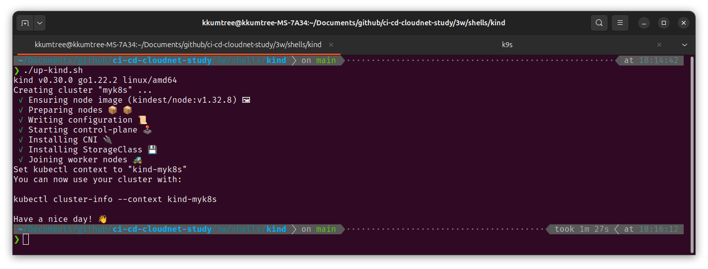
아래의 명령어로 ~/.kube/config 권한 인증이 로드된 것을 확인합니다.
kubectl get pod -v6
cat ~/.kube/config | grep 0.0.0.0
docker ps
docker images | grep kindest
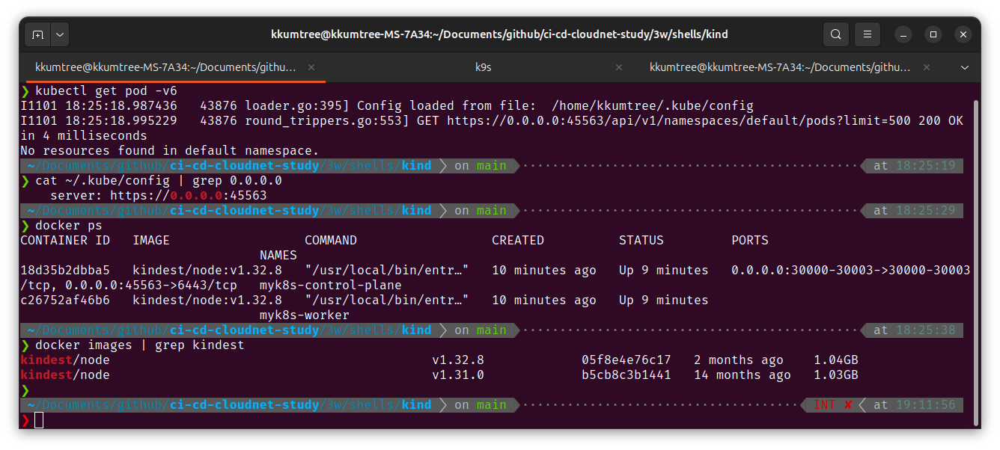
(2) kube-ops-view 설치
아래 커맨드를 입력하여 시각화 툴인 kube-ops-view를 설치합니다.
helm repo add geek-cookbook https://geek-cookbook.github.io/charts/
helm install kube-ops-view geek-cookbook/kube-ops-view --version 1.2.2 --set service.main.type=NodePort,service.main.ports.http.nodePort=30001 --set env.TZ="Asia/Seoul" --namespace kube-system
export NODE_PORT=$(kubectl get --namespace kube-system -o jsonpath="{.spec.ports[0].nodePort}" services kube-ops-view)
export NODE_IP=$(kubectl get nodes --namespace kube-system -o jsonpath="{.items[0].status.addresses[0].address}")
echo http://$NODE_IP:$NODE_PORT
# echo http://$NODE_IP:$NODE_PORT/#scale=2 # 배율


1. 각 어플리케이션 설정
Docker compose로 Jenkins 및 Gitea 배포하고 각각에 대한 설정을 해봅니다.
(1) 기본 배포 및 Jenkins 설정
# 3w/cicd-labs/docker-compose.yaml
# 아래 파일을 docker compose up -d 로 배포
services:
jenkins:
container_name: jenkins
image: jenkins/jenkins:lts
restart: unless-stopped
networks:
- cicd-network
ports:
- "8080:8080"
- "50000:50000"
volumes:
- /var/run/docker.sock:/var/run/docker.sock
- jenkins_home:/var/jenkins_home
# privileged: true
gitea:
container_name: gitea
image: docker.gitea.com/gitea:1.25.0
restart: unless-stopped
networks:
- cicd-network
ports:
- "10022:22"
- "3000:3000"
volumes:
- ./gitea-data:/data
- /etc/timezone:/etc/timezone:ro
- /etc/localtime:/etc/localtime:ro
environment:
- USER_UID=1000
- USER_GID=1000
volumes:
jenkins_home:
gitea-data:
networks:
cicd-network:
driver: bridge
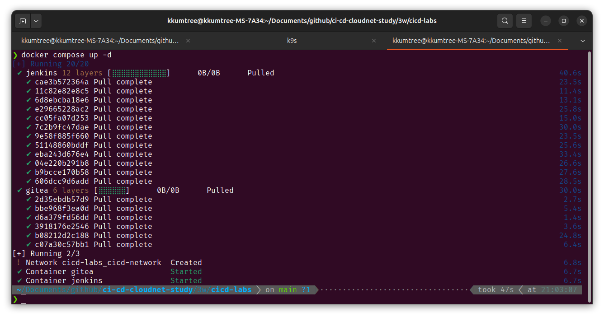
jenkins에 볼륨을
**./**jenkins_home:/var/jenkins_home으로 했을 경우,permission error가 발생합니다.

이후 정상적으로 배포되었는지 확인 후, Jenkins Admin 패스워드를 확인합니다.
for i in gitea jenkins ; do echo ">> container : $i <<"; docker compose exec $i sh -c "whoami && pwd"; echo; done

세팅할 때는 컨테이너가 Host에 접속할 수 있는 IP를 찾아서 변경합니다.
# 실습시 공유기 대역이 192.168.1.1/24 이었으므로, 해당 대역 검색 후 적용
ifconfig | grep 192.168 -C1
# USB무선랜을 사용 중이어서, wlx로 시작되는 주소 사용
# virbr0: flags=4099<UP,BROADCAST,MULTICAST> mtu 1500
# inet 192.168.122.1 netmask 255.255.255.0 broadcast 192.168.122.255
# ether 52:54:00:a3:a7:2c txqueuelen 1000 (Ethernet)
# --
# wlx909f33eeed74: flags=4163<UP,BROADCAST,RUNNING,MULTICAST> mtu 1500
# inet 192.168.1.25 netmask 255.255.255.0 broadcast 192.168.1.255
# inet6 fe80::14af:e:a003:b5ab prefixlen 64 scopeid 0x20<link>
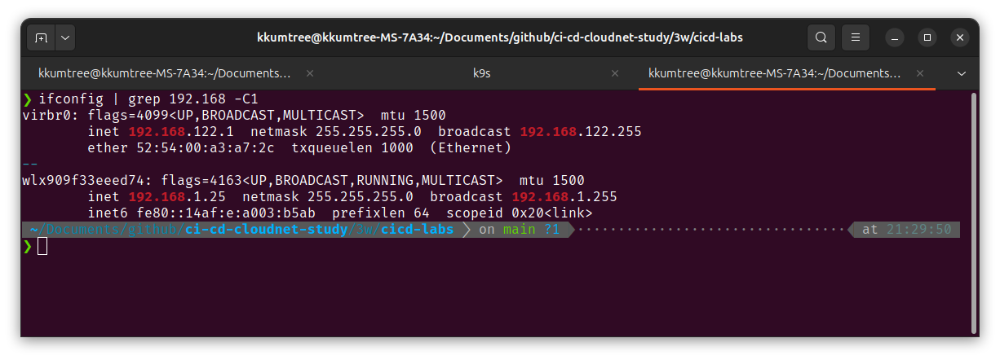

또는 컨테이너들이 배포된 Docker 브릿지 주소를 활용할 수 있습니다.
docker inspect gitea | grep Gateway
# "Gateway": "",
# "IPv6Gateway": "",
# "Gateway": "172.27.0.1",
# "IPv6Gateway": "",
ifconfig | grep 172.27
# inet 172.27.0.1 netmask 255.255.0.0 broadcast 172.27.255.255

(2) Jenkins의 Docker-out-of-Docker(DooD) 설정
일반적인 DinD 으로 배포하려면, privileged 권한을 올려줘야합니다.
더불어 여러 Job이 돌는 상황에는 그닥…
그래서, 아래와 같은 구조로 바꾸기 위해 재구성합니다.
flowchart LR
A --> B --> C
A[Jenkins Container 내의 Docker Client]
B[Docker UDS를 통해 Host Daemon에 접근]
C[Host에 새로운 컨테이너 Deploy]
UDS로 접근하려면, Jenkins Container에 아래의 수정을 가합니다.
- Docker client 설치
- jenkins 유저에도 docker 실행권한 부여
- 그룹 생성 및 유저 추가
jenkins:docker
- 그룹 생성 및 유저 추가
## 상승된 root 권한으로 접근
docker compose exec --privileged -u root jenkins bash
## jenkins 컨테이너 내에서 Docker Engine 설치 및 권한 부여
id # 현재 권한 확인
# uid=0(root) gid=0(root) groups=0(root)
## Docker Engine 클라이언트 설치
## https://get.docker.com/ 출력 값을 변경하여, CLI만 설치하였습니다.
## curl -fsSL https://get.docker.com -o get-docker.sh && sh get-docker.sh --dry-run
## 실습 당시 이미지는 Debian 기반
## `docker-ce-cli`에 유의합니다.
apt-get -qq update >/dev/null
DEBIAN_FRONTEND=noninteractive apt-get -y -qq install ca-certificates curl >/dev/null
install -m 0755 -d /etc/apt/keyrings
curl -fsSL "https://download.docker.com/linux/debian/gpg" -o /etc/apt/keyrings/docker.asc
chmod a+r /etc/apt/keyrings/docker.asc
echo "deb [arch=$(dpkg --print-architecture) signed-by=/etc/apt/keyrings/docker.asc] https://download.docker.com/linux/debian $(. /etc/os-release && echo "$VERSION_CODENAME") stable" > /etc/apt/sources.list.d/docker.list
apt-get -qq update >/dev/null
DEBIAN_FRONTEND=noninteractive apt-get -y -qq install docker-ce-cli curl tree jq yq wget >/dev/null
## jenkins 유저에도 Docker 실행권한 부여
# 작성 중 휴먼에러로, Docker 소켓의 권한이 바뀌어 롤백 후 아래와 같이 수정하였습니다.
stat -c '%g' /var/run/docker.sock
groupadd -g $(stat -c '%g' /var/run/docker.sock) -f docker
usermod -aG docker jenkins
grep docker /etc/group
grep jenkins /etc/group
exit

docker compose restart jenkins
docker compose exec jenkins id
docker compose exec jenkins docker info
docker compose exec jenkins docker ps
다시 확인합니다.
stat -c '%g' /var/run/docker.sock의 경우,
Host의 GID와 맞추지 않을 경우, Host 소켓도 사용 불능이 되어, GID를 맞추는 작업입니다.
(Privileged 모드여서 가능한 부분)
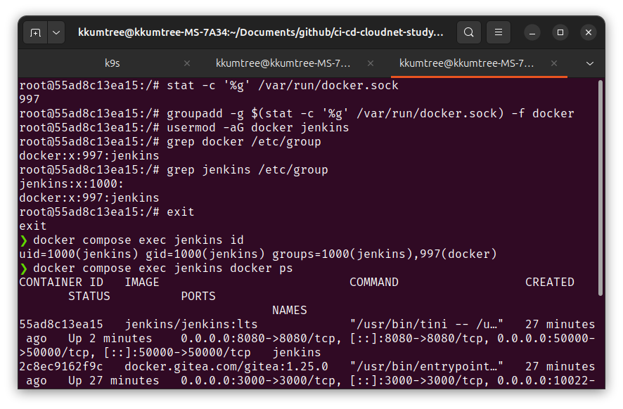
(3) Gitea 설정
Server Domain과 Gitea 기본 URL을 Jenkins와 같이,
호스트 IP(Docker Compose의 브릿지 게이트웨이)로 설정하였습니다.

grep localhost /etc/hosts
# 127.0.0.1 localhost
# ::1 ip6-localhost ip6-loopback
open "http://127.0.0.1:3000"
당장의 접속은 localhost, 즉 127.0.0.1로도 무방합니다.
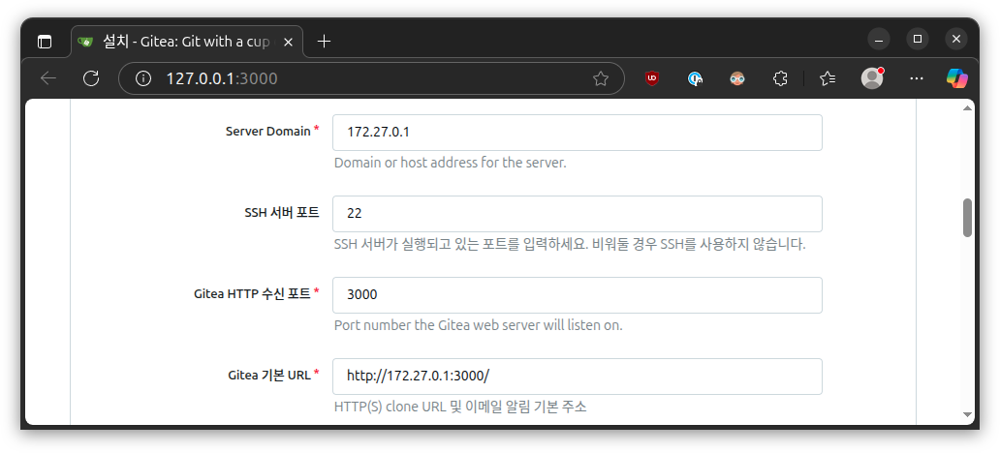
추가로 관리자 계정도 설정합니다(옵션).

(4) Docker Token 생성
Docker에서 Personal Access Token(PAT)을 생성합니다.
(Read, Write, Delete 모든 권한을 부여했습니다)
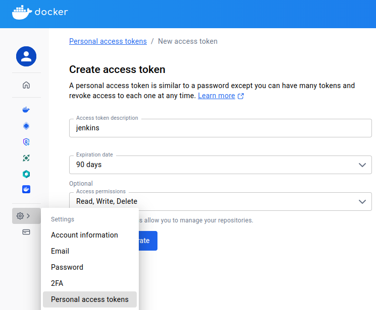
dckr_pat_<난수>_<난수> 형태를 가지며, 이 또한 메모해둡니다.
2. 간단 배포 구성
Jenkins 컨테이너가 Gitea와 DockerHub에서 리소스를 받고,
빌드 후 kind 클러스터에 배포하도록 해봅니다.
flowchart LR
A --> C --> D
B --> C
A[Gitea Repo Pull]
B[Docker Hub Pull]
C[Jenkins Build]
D[Deploy in kind]
(1) Gitea 소스코드 생성
Access Token을 활용하여, 평소와 같이 git clone/push를 해봅니다.
Access Token도 만들어봅시다.
(우측 상단의 설정 > 어플리케이션)
이때, Token Permission에서 repository에 대한 Read and Write를 활성화 합니다.

다른 토큰들과 마찬가지로, 한번만 확인가능하니 따로 메모를 해둡니다.

Private Repository들을 생성한 후에,
토큰을 통해 호스트 IDE에서도 편집을 할수 있는지 확인해봅니다.
TOKEN=1965eb8dbc1751a78d6f91dc9f0f8a8f9e48b1d8
TOKEN_NAME=devops
HOSTIP=172.27.0.1
git clone http://$TOKEN_NAME:$TOKEN@$HOSTIP:3000/kkumtree/dev-app.git
git clone git@172.27.0.1:kkumtree/dev-app.git test # 차단됨 확인
git clone http://172.27.0.1:3000/kkumtree/dev-app.git test # ID/PW 정상 입력시 받음
마지막 케이스의 경우 ID/PW로 접근이 가능한데, 추후 막아보겠습니다.

Host IDE(VSCode)를 통해, 파일을 추가했습니다.
## 실습파일
## 3w/cicd-labs/dev-app
# tree -a
# .
# ├── Dockerfile
# ├── .gitignore # repo 생성 시, 함께 생성
# ├── Jenkinsfile
# ├── README.md
# ├── server.py
# └── VERSION

평소 하듯이, 더하고 커밋하고 올려봅니다.
이미, 토큰값이 있기 때문에 remote에 올라감을 알 수 있습니다.
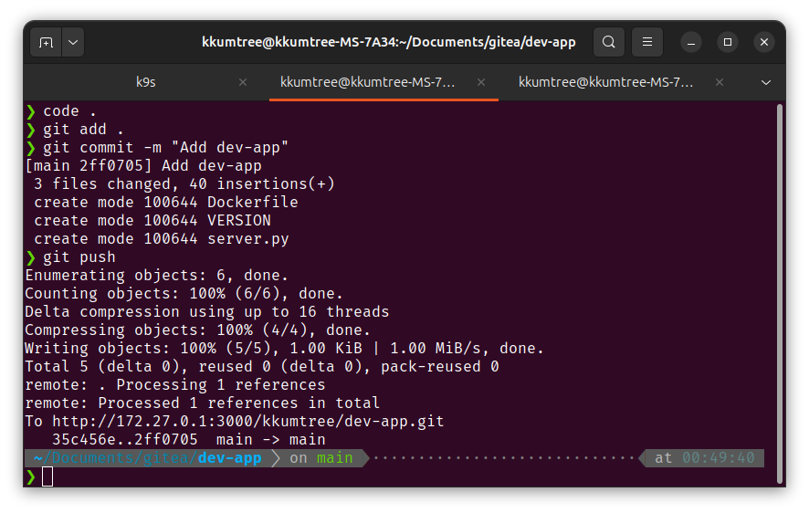
(2) Gitea 조직 생성 및 개인 Repository 소유권 이전
Jenkins 플러그인과의 연동을 위해서, 많은게 바뀌어서 설정을 다시 진행했습니다.
- ORG 생성(선택/권장사항)
새로운 조직을 클릭하여, 조직을 생성합니다.
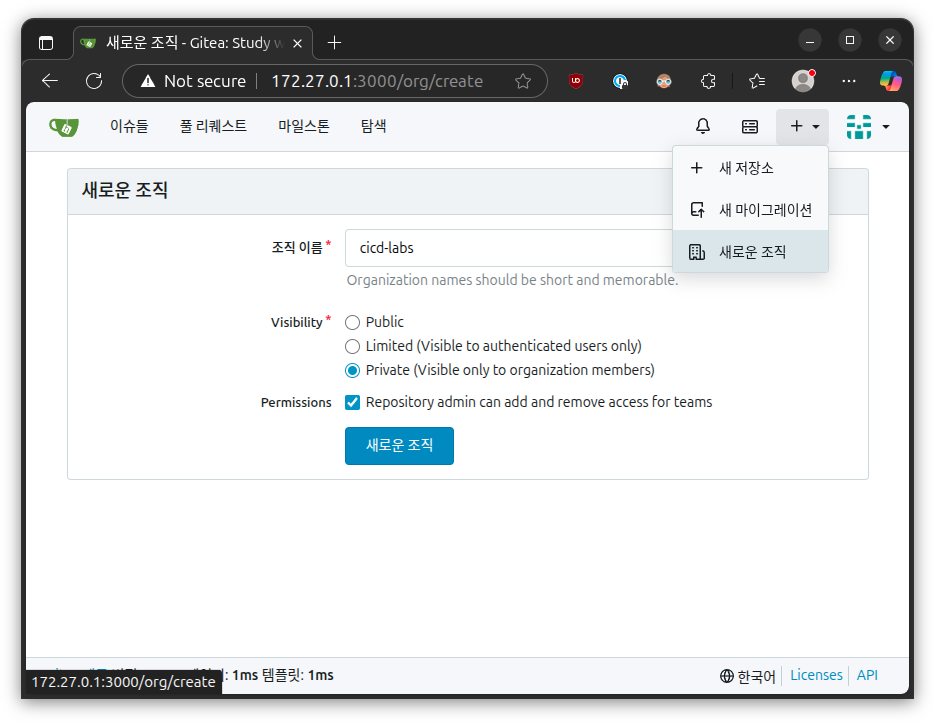 - 기존 Repository 소유권 이전
기존 레포(e.g. dev-app) 설정 맨 아래에 소유권 이전을 클릭합니다.
이때, 새 소유자는 새로 생성한 조직 이름으로 지정합니다.

- Token 재 생성
조건 충족을 위해 아래의 권한을 부여합니다.
- read:organization # 조직 권한을 읽습니다.
- write:repository # repository를 읽습니다.
- read:user # user의 정보를 읽습니다.
(3) Jenkins 플러그인 설치 및 Token 주입
설치한 Plugin들은 아래와 같습니다.
Gitea 서버 주소 및 토큰을 설정해봅니다.
경로는 Manage -> System -> Gitea server 입니다.
이전에 파악했던 Host IP와 포트번호를 입력합니다. 유효하면 Gitea 버전이 확인됩니다.

(선택) Jenkins 및 Jenkins Node에서만 현재 상황을 파악할 수 있게 read-only 키를 별도 생성하였습니다.
- read:organization
- read:repository
- read:user

New Item(혹은 Create a job) -> Orgnization Folder를 선택합니다.

Project -> Repository Sources -> Gitea Organization 을 클릭 후, 앞서 지정한 Server를 선택합니다.
Behaviours는 Discover branches의 기본 Strategy 외에 제거합니다.
이후 Repository Write 권한이 있는 Credential을 추가하기 위해, Add -> cicd-labs를 클릭합니다.
Owner는 Token 발급 유저, 혹은 유저가 속한 Organization 이름을 기입합니다.
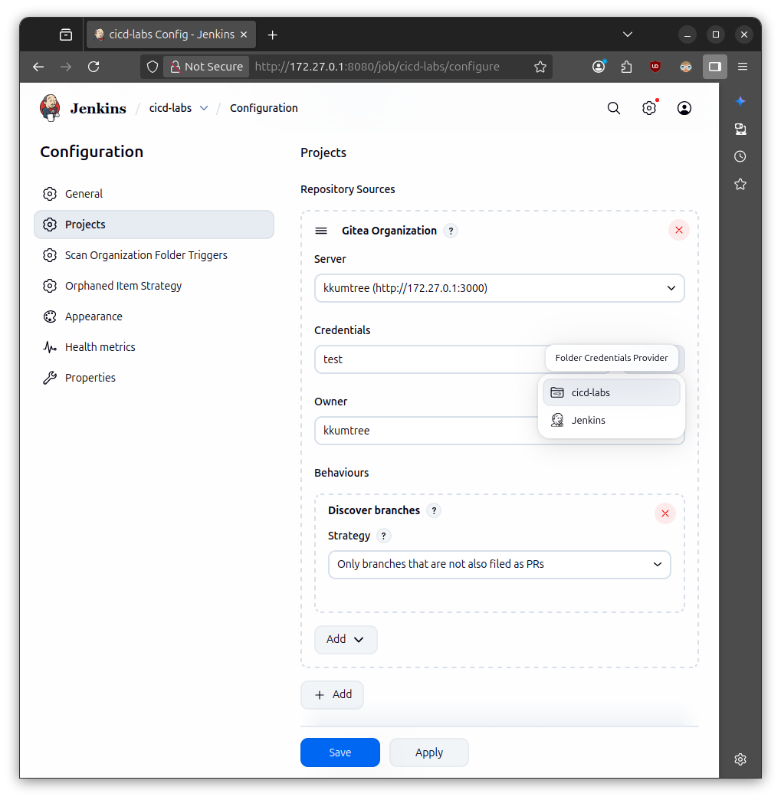
Kind에서 Gitea Personal Access Token 선택 후, 임의 ID 지정 후 저장합니다.
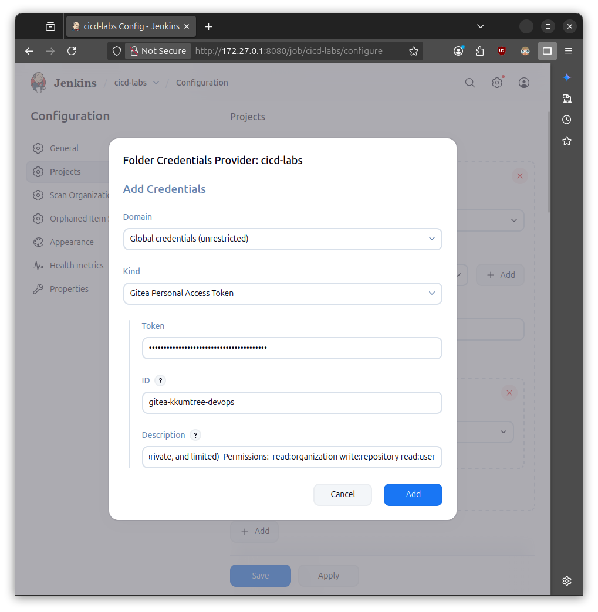
저장하면, organization(혹은, User)의 repository, branch 정보를 읽어옵니다.

마지막으로 Docker Token도 저장합니다.
(Username and password. Username은 Docker 계정명)


(4) 파이프라인 구성
기존의 dev-app에 Jenkinsfile을 생성 후, Push 합니다.
Jenkins Organization에서 Scan Gitea Organizaton Now 클릭 후,
Log를 조회하면, Jenkinsfile을 발견했다고 하면서, Build를 시작합니다.
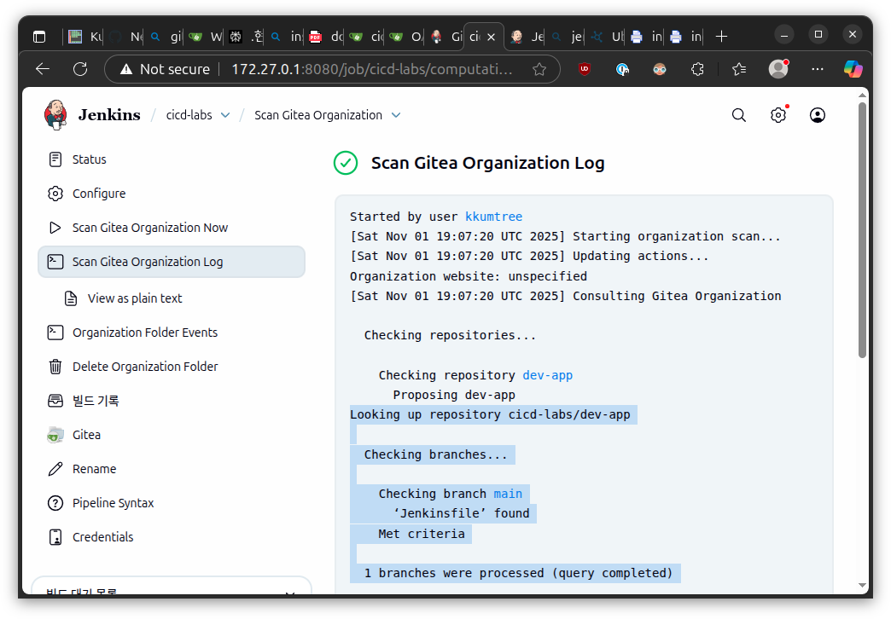
상세를 보면, 빌드가 성공한 것을 확인할 수 있습니다.

Docker Hub에도 정상 게시된 것을 확인할 수 있습니다.

(5) Helm으로 수동 배포
해당 이미지를 가지고 Helm 파일로 만들어 배포를 해보았습니다.
실습 파일들은
/3w/helm에 있습니다.
# tree
# .
# ├── Chart.yaml
# ├── templates
# │ ├── deployment.yaml
# │ └── service.yaml
# └── values.yaml
helm install timeserver .
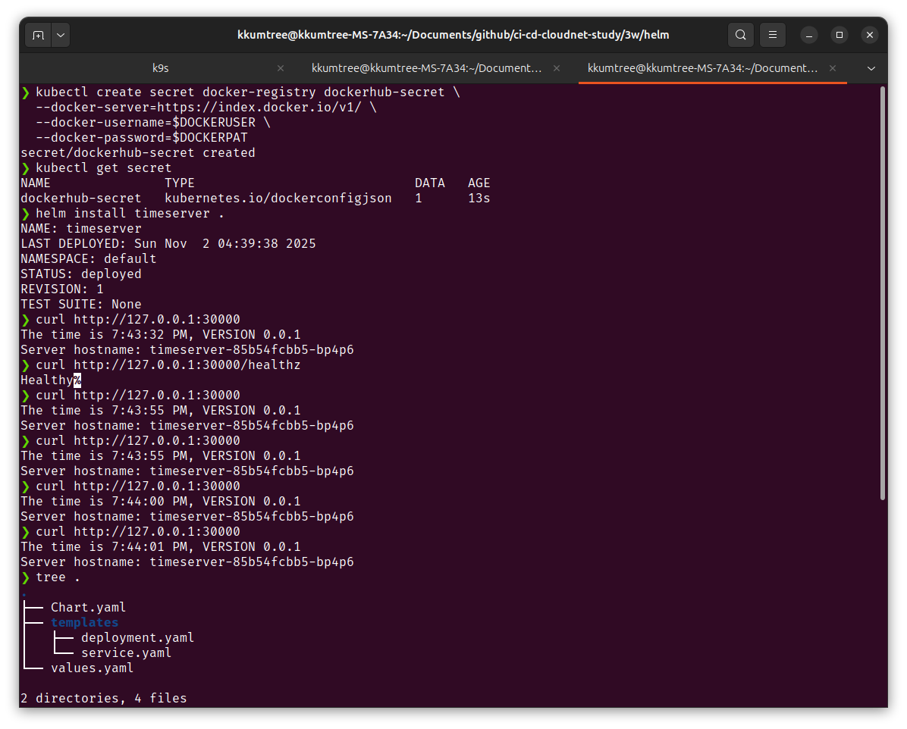

for i in {1..100}; do curl -s http://127.0.0.1:30000 | grep name; done | sort | uniq -c | sort -nr
2개의 파드에서 분산되는 것을 확인하였습니다.
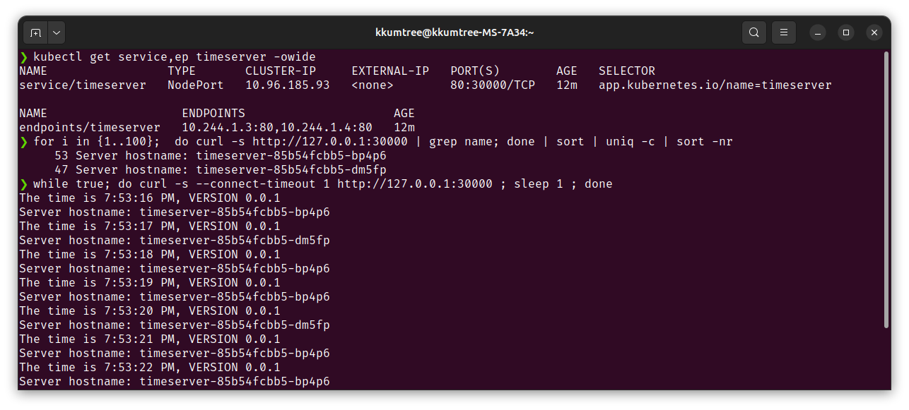
replica를 4개로 늘려둔 후에도 골고루 분산되는 것을 알 수 있었습니다.

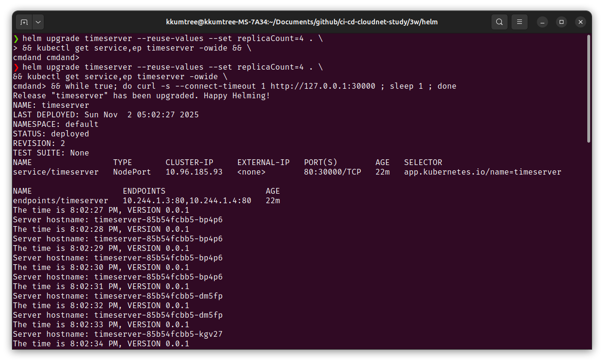
for i in {1..100}; do curl -s http://127.0.0.1:30000 | grep name; done | sort | uniq -c | sort -nr
# 30 Server hostname: timeserver-85b54fcbb5-dk7rg
# 26 Server hostname: timeserver-85b54fcbb5-kgv27
# 24 Server hostname: timeserver-85b54fcbb5-dm5fp
# 20 Server hostname: timeserver-85b54fcbb5-bp4p6
애플리케이션 0.0.1 버전에서 0.0.2 버전으로 소스코드를 변경한 후, 이를 Jenkins가 빌드한 이미지를 배포 해봅니다.
git push 이후 Scan Multibranch Pipeline Now를 클릭하면 Docker Hub에 새 버전의 이미지 태그가 생성된 것 확인할 수 있습니다.


다시 helm 변수를 바꿔서 배포해봅니다.
새로운 버전의 Pod가 생성된 뒤, 기존 버전의 Pod가 순차적으로 사라짐을 확인하였습니다.
helm upgrade timeserver --reuse-values --set image.tag="0.0.2" .

3. kind cluster에 Jenkins 배포해보기
대부분은 Jenkins의 문서를 참조하였습니다만,
로컬(Kind)환경에 구성하다보니 다소 손을 봐야하는 부분을 다루어야 합니다.
실습 파일들은
/3w/jenkins-on-kind에 있습니다.
# tree
# .
# ├── jenkins-01-volume.yaml
# ├── jenkins-01-volume.yaml.default # 변경 비교를 위한 파일
# ├── jenkins-02-sa.yaml
# ├── jenkins-values.yaml
# └── jenkins-values.yaml.default # 변경 비교를 위한 파일
(1) Helm 템플릿 다운로드 및 배포
curl https://raw.githubusercontent.com/jenkins-infra/jenkins.io/master/content/doc/tutorials/kubernetes/installing-jenkins-on-kubernetes/jenkins-01-volume.yaml -o jenkins-01-volume.yaml
curl https://raw.githubusercontent.com/jenkins-infra/jenkins.io/master/content/doc/tutorials/kubernetes/installing-jenkins-on-kubernetes/jenkins-02-sa.yaml -o jenkins-02-sa.yaml
curl https://raw.githubusercontent.com/jenkinsci/helm-charts/main/charts/jenkins/values.yaml -o jenkins-values.yaml
cp jenkins-01-volume.yaml jenkins-01-volume.yaml.default
cp jenkins-values.yaml jenkins-values.yaml.default
아래와 같이 부분적으로 변경하여야합니다.
-
Local PV 폴더 생성 후, 권한 부여합니다. jenkins-01-volume.yaml에 의해서, 로컬 볼륨을 /data/jenkins-volume 으로 지정
sudo mkdir -p /data/jenkins-volume sudo chown -R 1000:1000 /data/jenkins-volume -
local로 바꾸고, nodeAffinity를 부여하여 Control Plane Taint 에러를 해소합니다.
이 경우에는 Worker Node를 특정하여, 해당 노드에만 Jenkins가 배포되게 지정했습니다.
diff jenkins-01-volume.yaml jenkins-01-volume.yaml.default
# 13c13
# < local:
# ---
# > hostPath:
# 15,22d14
# < nodeAffinity:
# < required:
# < nodeSelectorTerms:
# < - matchExpressions:
# < - key: kubernetes.io/hostname
# < operator: In
# < values:
# < - myk8s-worker
(2) values.yaml 수정
앞서 PV 및 SA를 생성하였으므로 values에 이를 비활성화 하고,
NodePort로 열어두며, namespace를 jenkins로 지정해둡니다.
diff jenkins-values.yaml jenkins-values.yaml.default
# 4d3
# < name: jenkins
# 226,227c225
# < serviceType: NodePort
# < # serviceType: ClusterIP
# ---
# > serviceType: ClusterIP
# 236c234
# < nodePort: 30003 # kind 배포 시, 열어두었던 nodePort 사용
# ---
# > nodePort:
# 1273c1271
# < storageClass: jenkins-pv
# ---
# > storageClass:
# 1339,1340c1337
# < create: false
# < # create: true
# ---
# > create: true
# 1344c1341
# < name: jenkins
# ---
# > name:
(3) 배포 및 진입
# Helm Chart 추가
helm repo add jenkinsci https://charts.jenkins.io
helm repo update
kubectl apply -f jenkins-01-volume.yaml
kubectl apply -f jenkins-02-sa.yaml
helm install jenkins -n jenkins -f jenkins-values.yaml jenkinsci/jenkins
# 출력 암호
kubectl exec --namespace jenkins -it svc/jenkins -c jenkins -- /bin/cat /run/secrets/additional/chart-admin-password && echo
# 노드 포트 및 IP 주소를 통해 주소 획득
export NODE_PORT=$(kubectl get --namespace jenkins -o jsonpath="{.spec.ports[0].nodePort}" services jenkins)
export NODE_IP=$(kubectl get nodes --namespace jenkins -o jsonpath="{.items[0].status.addresses[0].address}")
echo http://$NODE_IP:$NODE_PORT

마지막 출력 값을 주소창에 넣어 접속합니다.
(2) Jenkins 내부 설정
리버스 프록시에 문제가 있으므로 다시 Jenkins URL을 http://$NODE_IP:$NODE_PORT로 수정합니다.
(관리 > System > Jenkins URL )

플러그인은 이렇게 설치합니다.
Reference

kkumtree
Source code on GitHub
© 2024 kkumtree and contributors All rights reserved.
Licensed under
CC BY-NC-ND 4.0